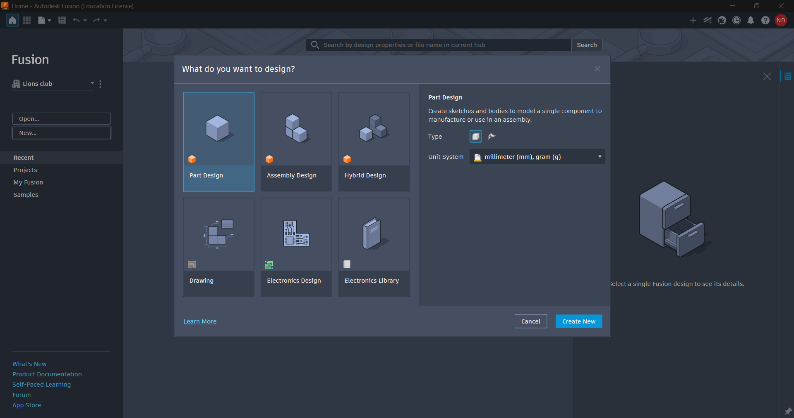
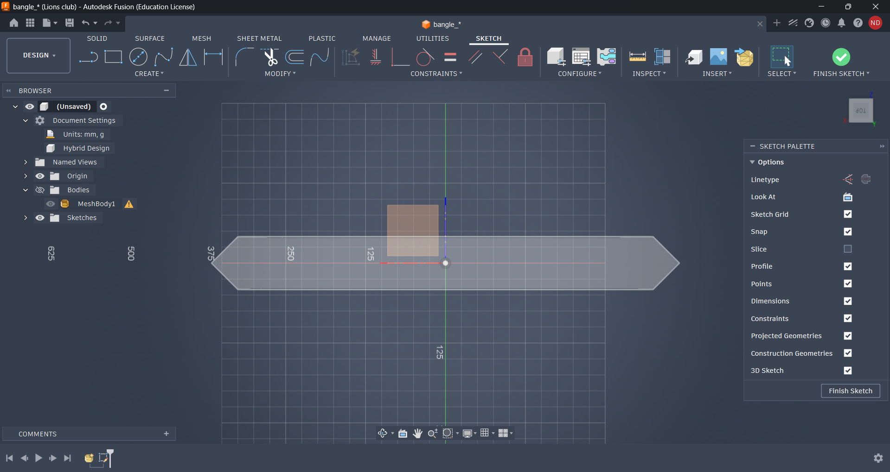
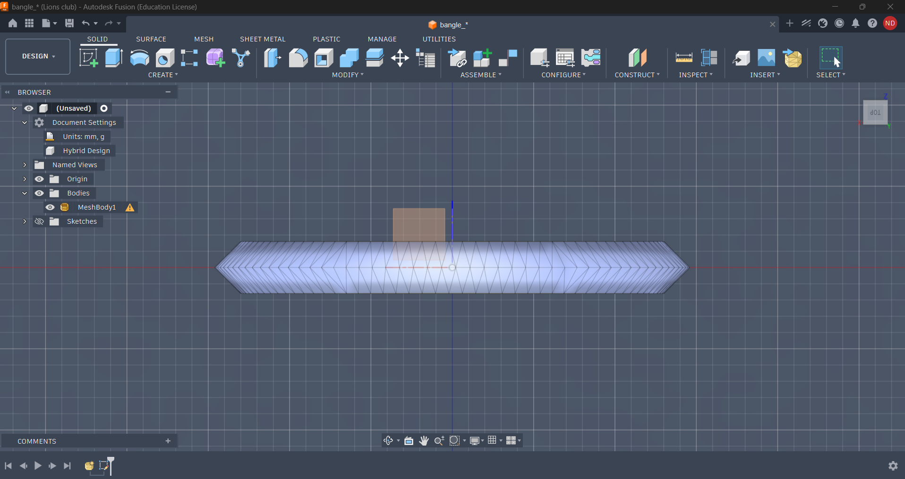
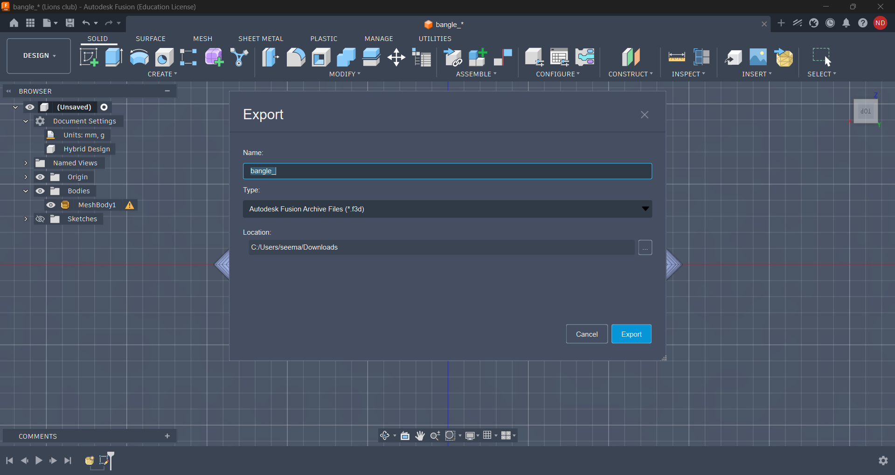

Week 1 - Day 3
← Back to Portfolio
Internship Report – Day 3
Objective
To apply Autodesk Fusion (Student Version) for practical 3D modeling by designing a bangle, and to understand how CAD tools can be used in creative product design, documentation, and GitHub workflows.
Tools Used
- Autodesk Fusion (Student) – for 3D modeling, simulation, and rendering
Step 1: Starting a New Design in Fusion
I opened Autodesk Fusion and created a new project file.

Step 2: Sketching the Bangle Profile
I used the Sketch tool to draw the circular profile of the bangle, defining its inner and outer diameters.

Step 3: Extruding the Shape
I applied the Extrude tool to give the bangle thickness and convert the 2D sketch into a 3D model.

Step 4: Refining the Design
I added smooth edges using the Fillet tool and adjusted dimensions to make the bangle realistic.
Step 5: Rendering the Bangle
I used Fusion’s Render workspace to apply materials (metallic finish) and lighting for a realistic look.
Step 6: Exporting & Sharing
I exported the design as both a Fusion file (.f3d) and a rendered image, which can be uploaded to GitHub for documentation.

Outcome
- Successfully designed a 3D bangle in Autodesk Fusion.
- Learned how to sketch, extrude, refine, and render a product design.
- Produced a professional 3D model that can be showcased in portfolio and GitHub repositories.
Reflection
Day 3 was my first hands-on 3D product design experience. Creating a bangle taught me:
- How to use CAD tools for creative design.
- The importance of precision in dimensions and finishing.
- How rendering adds realism to prototypes.
- This exercise showed me how Autodesk Fusion can bridge engineering design and creative product visualization, making my internship work more versatile.
References
- ChatGPT (Microsoft Copilot) – for structured storytelling and report formatting.
- Google Search – for exploring Autodesk Fusion tutorials.
- YouTube Tutorials – for learning CAD modeling and rendering basics.
- The Comet – for additional insights.
← Back to Portfolio